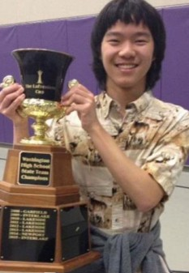
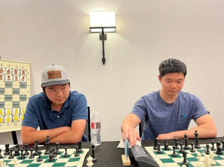

We grew up playing
chess here.
Daniel and Samuel He are identical twins from the Seattle area. We reached National Master through the local tournament circuit — the same scene many of our students are part of. We coached the Redmond High School chess team to the 2017 State Championship and a top-5 finish at Super Nationals. We still compete.

Samuel — WA Open co-champion

Daniel — 2024 WA State Champion

Over the board
Daniel He
2024 Washington State Chess Champion. Natural tactician who spent years building his positional understanding. Brings a sharp, pattern-based approach to coaching and has a knack for finding the moves others miss.
Samuel He
Two-time Washington Open co-champion. Naturally positional player who developed a dynamic, tactical edge over time. Focuses on structure, planning, and building opening systems that fit your style.
Credentials
Our background
- Both achieved National Master before age 18
- Coached Redmond High School to 2017 WA State Team Championship
- Top 5 finish at 2017 Super Nationals
- Combined 10+ years of private coaching experience
- Active competitive players — we still play in tournaments
- Trained extensively with chess engines — and know how to communicate what they show in human terms